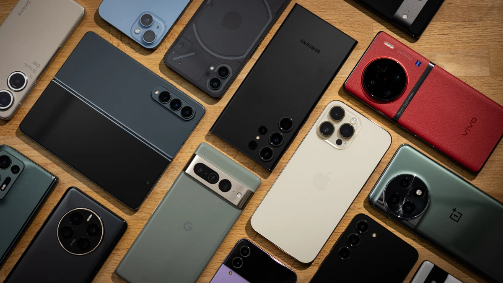
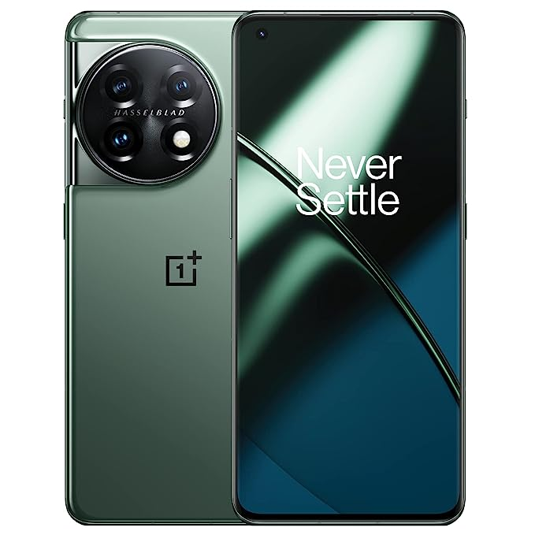

Welcome to our online phone store, where cutting-edge technology meets your mobile needs with style and convenience.
The iPhone 14 Pro showcases a stunning design, cutting-edge features, and a powerful camera system for unparalleled mobile photography. With its advanced performance capabilities and enhanced display technology, the iPhone 14 Pro offers a truly immersive and seamless user experience.
The Samsung S23 Ultra stands out with its extraordinary 100x Space Zoom feature, allowing users to capture detailed shots from incredible distances. Featuring an impressive display with an ultra-smooth 120Hz refresh rate, the Samsung S23 Ultra offers a visually captivating experience that sets it apart from other smartphones in its class.
The Google Pixel 7 Pro distinguishes itself with its exceptional computational photography capabilities, harnessing advanced AI algorithms to capture stunning and lifelike images in any lighting condition. With its seamless integration of Google's innovative software and hardware, the Pixel 7 Pro offers a unique and intuitive user experience, making it a standout choice for Android enthusiasts.
The OnePlus 11R sets itself apart with its remarkable Warp Charge technology, allowing users to charge their phone to a significant battery level in just a matter of minutes. With its sleek and minimalist design, combined with the powerful performance of the Snapdragon processor, the OnePlus 11R offers a unique balance of style and functionality for a truly premium smartphone experience.